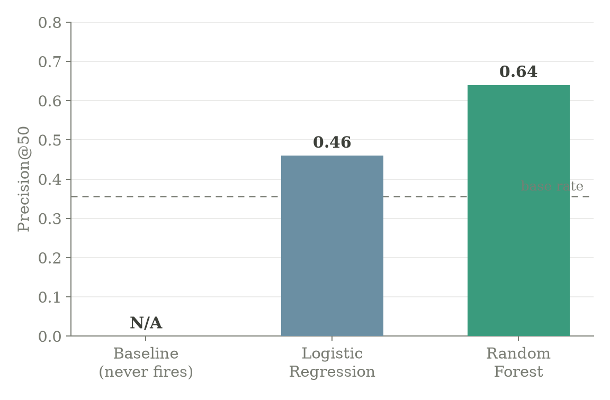
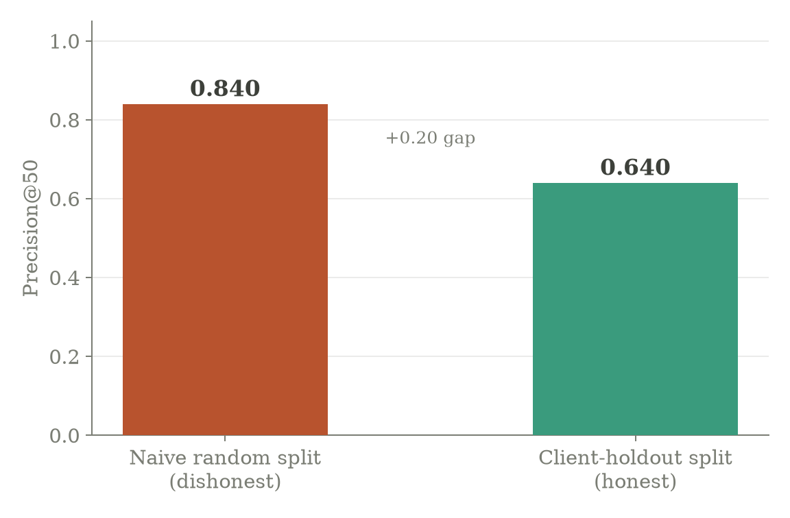
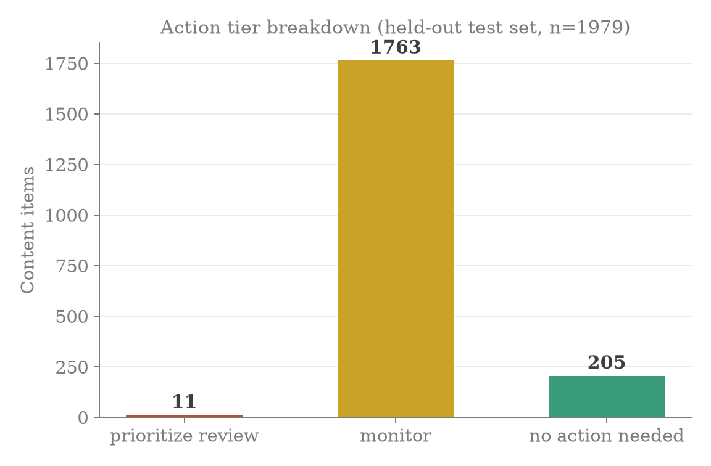

Which pages should a content editor review first for refresh, given limited weekly capacity? This project builds a decision-support ranking on FlyRank's internship warehouse (March 2026, 9.8M daily rows, 519K content items), comparing a transparent rule baseline against Logistic Regression and Random Forest under a client-holdout split. The baseline never fired on the held-out test set at all; Random Forest reached Precision@50 = 0.64 against a base rate of 0.356, with avg_position_h1 and impressions_h1 as its leading features. A deliberate stress test found a naive random split would have reported Precision@50 = 0.84 on the same data — a 20-point gap attributable to client memorization, not real skill. The output is a ranked review queue with reason codes, meant to prioritize human attention, not to replace it.
Decision: which pages an editor with limited weekly review capacity should look at first for refresh — rewrite, expand, protect, prune, or monitor.
Unit of analysis: one content item, summarized over a 15-day feature window (March 1–15, 2026) with a label built from the following 16-day window (March 16–31).
Cost of a wrong call: a false positive wastes scarce editor hours on a page that didn't need attention; a false negative lets a real decline continue unnoticed, a compounding cost. Because editor time is the scarce resource, Precision@K is the metric that matches the decision — not raw accuracy.
Why ML helps: a hand-written rule baseline already exists for this lane and is genuinely readable, but it never fired at all on the held-out population. The pattern is real — Random Forest clears the base rate by a wide margin — but too spread across interacting signals for one or two thresholds to catch.
Source: FlyRank/internship-warehouse on Hugging Face (gated; free account + read token, never committed, read from an environment variable at runtime).
Tables: fact_content_daily_performance (month=2026-03, 9,841,378 rows) and dim_content (519,606 rows). Windows: feature window March 1–15, target window March 16–31, decision point March 15, 2026.
Deliberately excluded, with reasons:
sessions_ai / ai_* columns — too sparse to be reliable at this scale (30,177 AI-session rows vs. 28.9M search-impression rows, checked directly in Week 1).dim_content is a single latest-state snapshot (exported 2026-07-03), not point-in-time, so these dates could be reading the future. Dropping them removed 81% of candidate rows — a real cost paid for honesty.IDs are pseudonymous and used only for joins/grouping, never as features. No client names, domains, URLs, or raw queries appear anywhere in this project.
Baseline, in plain words: a page is worth reviewing if it still has real search demand (impressions_h1 ≥ 80) and hasn't been touched in a long time (days_since_last_update ≥ 180), scored by exposure.
Models: Logistic Regression first (readable), then Random Forest — with a pre-commitment to stop there unless Random Forest clearly earned its added complexity.
Features (8), all knowable by the decision point: impressions_h1, clicks_h1, avg_position_h1, sessions_h1, engaged_sessions_h1, days_since_last_update, content_age_days, word_count.
Target: is_declining_label = 1 if a page's March 16–31 impressions are lower than its March 1–15 impressions, else 0 (minimum 50 impressions in the feature window to avoid labeling pure noise). A proxy, not a causal outcome.
Split: client-holdout, not a random row split — 28 clients, 22 train / 6 test, zero client overlap verified. Rows from the same client likely share hidden structure a random split would let a model memorize instead of generalize from.
The baseline scored zero of 1,979 test rows above zero — it never fires on this held-out population. Reporting a Precision@K from an all-tied score array would measure row order, not the rule, so it's reported as N/A rather than a number that looks real but isn't.
| Method | Precision@20 | Precision@50 |
|---|---|---|
| Baseline (rescaled rule) | N/A | N/A |
| Logistic Regression | 0.65 | 0.46 |
| Random Forest | 0.60 | 0.64 |

Random Forest wins at K=50, loses narrowly at K=20 — reported as a real split result, not smoothed into one "winner."
The split-honesty proof. The same model, on the same underlying data, was rerun under a naive random row split instead of the client-holdout split:

Leakage audit, repeated on the final 8-feature set: honest AUC 0.685 vs. leaky AUC 0.936 when a target-window column is deliberately added — confirming the test harness actually catches leakage, not just asserts it would.
What the model actually leans on (Random Forest feature importances):
| Feature | Importance |
|---|---|
avg_position_h1 | 0.244 |
impressions_h1 | 0.201 |
content_age_days | 0.167 |
clicks_h1 | 0.130 |
sessions_h1 | 0.123 |
word_count | 0.103 |
engaged_sessions_h1 | 0.016 |
days_since_last_update | 0.016 |
All plausible; none suspiciously dominant the way a leaked column would be (compare: the deliberately-leaked column above would sit near the top by a wide margin). The one genuine surprise: days_since_last_update — the "staleness" signal this lane is named after, and the exact feature a point-in-time bug had to be fixed to trust — ties for the lowest importance of all eight. That's not a one-off: Week 4's independent check on the starter dataset already returned a non-monotonic, MIXED verdict for staleness vs. decline rate. Two datasets, two methods, one consistent finding — position and current exposure carry the real weight here, not how long ago a page was touched.
days_since_last_update underperforms what the lane's own name suggests it should.Built only from the validated 1,979-row test population — the one population the Precision@50=0.64 number actually describes.

Reason codes among prioritize_review rows: high_exposure_declining_risk (9), poor_position_declining_risk (2) — both tied to the model's own top two features.
Required before acting on any flagged row: a consolidation check (did a sibling page absorb the demand?), a seasonality check, a noise check on volume, and a sanity check that the underlying number actually supports the reason code assigned.
Never automated: no auto-publishing from this queue; a flag is not proof of decline (roughly 1 in 3 flagged pages in this run were not actually declining); the queue never justifies removing a page or a client-level decision on its own.
Every notebook below is committed with real, executed outputs visible on GitHub — not re-run copies.
Seeds: random_state=42 throughout. Reproducibility was not assumed — a real bug (DuckDB doesn't guarantee row order on a remote parquet scan) silently broke it once; fixed by sorting before seeding and using a stable sort, then verified identical across 3 independent full reruns.
To reproduce: clone the repo, pip install -r requirements.txt, generate a Hugging Face read token, set it as an HF_TOKEN environment variable, run any notebook top to bottom.